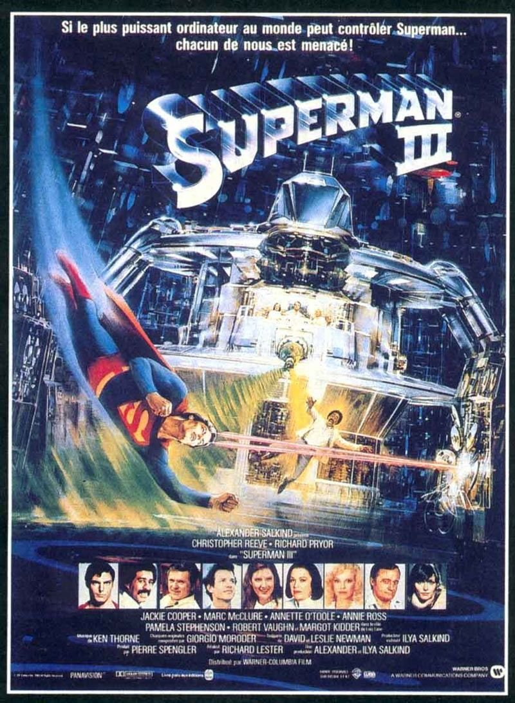
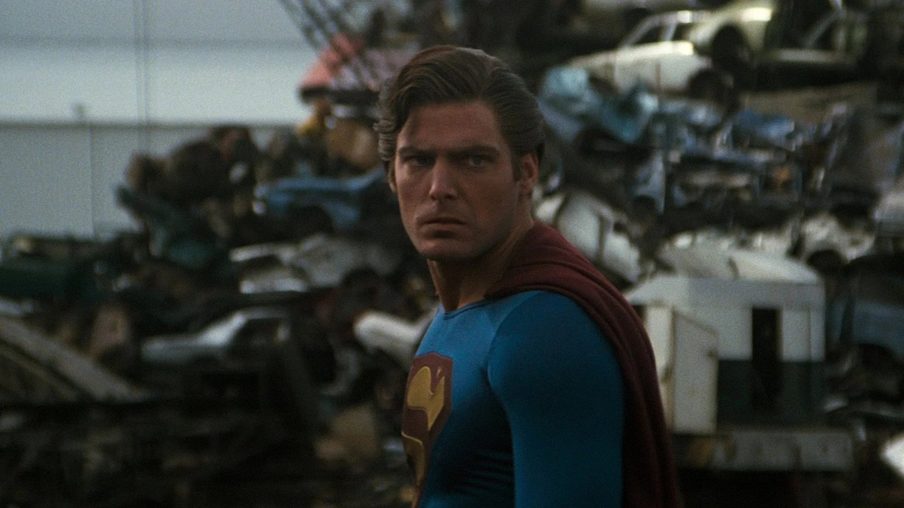

Encore une cassette enregistrée.
Comme pour Rambo III, c'est mon père qui l'avait enregistré un soir à la télévision. Et comme pour Rambo III, la cassette avait sa jaquette, découpée dans Télé K7 et glissée dans le boîtier pour lui donner l'allure d'un vrai film du commerce.
Et une fois de plus, je suis arrivé par le troisième épisode. Je n'avais vu ni le premier ni le deuxième. Pour moi, Superman a commencé ici.
Il y a une scène que je n'ai jamais oubliée. Dans une casse automobile, Superman est devenu mauvais, sombre et cynique, et Clark Kent surgit de lui pour l'affronter. L'homme contre son double, au milieu des carcasses de voitures. J'étais fasciné.
C'était ma scène préférée. Elle l'est toujours.
Ce soir, on ressort la cassette de mon père.

Superman III — affiche française, 1983
Superman III.
1983. Réalisé par Richard Lester. Avec Christopher Reeve, Richard Pryor, Annette O'Toole et Robert Vaughn.
Cinq ans plus tôt, Superman avait fait croire au monde entier qu'un homme pouvait voler. Superman II avait prolongé le mythe avec un affrontement épique contre trois criminels venus de Krypton.
Avec ce troisième volet, la saga prend un virage que personne n'attendait : la comédie.
Richard Pryor, le comique le plus populaire d'Amérique, se retrouve en tête d'affiche aux côtés de Christopher Reeve. Il incarne Gus Gorman, un employé maladroit qui se découvre un talent de génie pour l'informatique, et dont un industriel sans scrupules va se servir pour prendre le contrôle du monde.
Et pour la première fois, Superman affronte l'adversaire le plus redoutable qui soit : lui-même.
Superman III fait le pari le plus risqué de cette saison spéciale. Il ne change pas seulement le décor ou l'échelle, il change le genre. La question devient alors : une suite peut-elle faire rire sans trahir le héros qu'elle met en scène ?
Derrière la saga Superman, il y a une famille de producteurs : Alexander et Ilya Salkind, père et fils, associés à Pierre Spengler. Ce sont eux qui ont acheté les droits du personnage dans les années 70 et fait le pari fou de le porter au cinéma avec des moyens jamais vus.
Le premier Superman, réalisé par Richard Donner en 1978, est un triomphe. Mais les relations entre Donner et les producteurs se dégradent, et il est écarté en plein tournage de Superman II. Richard Lester le remplace, termine le film et retourne une partie des scènes.
Lester n'est pas un réalisateur de grand spectacle. C'est un homme de comédie, celui de Quatre garçons dans le vent avec les Beatles, et des Trois Mousquetaires. Pour Superman III, il a les mains libres, et il emmène la saga vers ce qu'il sait faire de mieux : le burlesque.
Le casting s'en ressent. Gene Hackman, l'inoubliable Lex Luthor, ne revient pas. Margot Kidder, la Loïs Lane des deux premiers films, n'apparaît que quelques minutes. On a souvent dit que ses critiques publiques contre le renvoi de Donner n'y étaient pas étrangères. À leur place, le film ramène Clark Kent à Smallville et à son amour de jeunesse, Lana Lang, jouée par Annette O'Toole.
Et puis il y a Richard Pryor. Un soir, sur le plateau du Tonight Show, le comique le plus célèbre d'Amérique raconte qu'il a adoré Superman II. Les Salkind l'entendent et lui offrent un rôle sur mesure, pour un cachet de plusieurs millions de dollars. Pryor devient la deuxième tête d'affiche du film, presque à égalité avec Christopher Reeve.
Le tournage se partage entre les studios de Pinewood en Angleterre et le Canada, où les petites villes de l'Alberta deviennent Smallville. La musique est confiée à Ken Thorne, qui reprend et réarrange les thèmes de John Williams.
Le film sort aux États-Unis en juin 1983. Le pari est clair : faire de Superman un film pour toute la famille, plus léger, plus drôle, plus proche de la comédie que de l'épopée.

Superman, passé du côté sombre
Gus Gorman n'a pas de chance. Sans emploi, fauché, il s'inscrit presque par hasard à une formation d'informaticien. Et il découvre qu'il a un don stupéfiant pour les ordinateurs.
Embauché dans une grande entreprise de Metropolis, il trouve vite une combine : détourner les fractions de centimes oubliées sur les fiches de paie de tous les employés. Personne ne les remarque, mais réunies, elles finissent par faire une fortune.
Personne, sauf le patron, Ross Webster, un industriel aussi riche que dépourvu de scrupules. Plutôt que de le dénoncer, Webster décide de se servir du talent de Gus pour un projet bien plus ambitieux : prendre le contrôle des récoltes, du pétrole et du climat de la planète grâce aux ordinateurs.
Pendant ce temps, Clark Kent retourne à Smallville pour la réunion des anciens élèves de son lycée. Il y retrouve Lana Lang, son amour d'adolescence, devenue mère célibataire, et le temps d'un séjour, il redevient le jeune homme timide qu'il a toujours été.
Mais un seul obstacle se dresse entre Webster et ses ambitions : Superman. Pour s'en débarrasser, Gus va tenter de recréer en laboratoire la seule chose capable de l'atteindre : la kryptonite.
La recette n'est pas tout à fait exacte. Et ce qu'elle va réveiller en Superman est peut-être plus dangereux qu'un poison.
Un génie de l'informatique malgré lui, un milliardaire prêt à tout, et un héros face à une question qu'il ne s'était jamais posée : que se passe-t-il quand Superman cesse d'être bon ?
Superman III ressemble à deux films en un, et c'est exactement ce qui le rend fascinant.
Le premier est une comédie. Richard Lester ouvre le film sur une longue séquence burlesque dans les rues de Metropolis : des passants qui trébuchent, des voitures qui s'emboutissent, une cascade de gags dignes du cinéma muet. Richard Pryor porte cette partie avec son énergie habituelle, entre maladresse et génie involontaire. Tout ne fonctionne pas : certains gags tombent à plat, et le ton jure parfois avec le personnage de Superman.
Le second film est beaucoup plus sombre, et beaucoup plus audacieux.
Car Superman III ose ce qu'aucun film du personnage n'avait osé avant lui : le corrompre. Sous l'effet de la fausse kryptonite, Superman devient cynique, égoïste, mesquin. Il redresse la tour de Pise par caprice, éteint la flamme olympique, traîne au comptoir d'un bar, mal rasé, dans un costume aux couleurs ternies. Le symbole absolu du bien se met à faire le mal, et le film en tire des images qui marquent.
Et puis il y a la scène de la casse.
C'est le sommet du film, et sans doute l'une des meilleures scènes de toute la saga. Superman et Clark Kent se séparent littéralement et s'affrontent au milieu des carcasses de voitures. Le conflit intérieur du héros devient un combat physique, presque un film d'horreur. Pas de méchant venu d'ailleurs : le seul adversaire à la hauteur de Superman, c'est lui-même.
Toute cette partie repose sur Christopher Reeve. Il joue trois personnages à la fois : le Clark Kent timide, le Superman lumineux, et sa version corrompue, froide et arrogante. C'est probablement sa plus belle performance dans la saga, et la preuve qu'il était bien plus qu'un physique parfait pour le rôle.
Entre les deux, les scènes de Smallville apportent une douceur inattendue. Clark retrouve Lana Lang, et le film prend le temps de montrer l'homme derrière le héros.
Alors, une suite peut-elle tout changer ? Superman III change de genre, de ton, de méchant. Il prend des risques, et il en rate certains. Mais en plongeant son héros dans l'ombre, il touche à quelque chose que les deux premiers n'avaient jamais exploré : la part sombre de Superman.

La casse : Clark Kent contre son double
Superman III n'a jamais été oublié. Il a été rangé dans la mauvaise case : celle du moment où la saga a commencé à décliner.
Le box-office a donné le premier signal. Environ soixante millions de dollars de recettes aux États-Unis, contre plus de cent pour Superman II et plus encore pour le premier. Le film reste rentable, mais la courbe descend, et Hollywood n'aime pas les courbes qui descendent.
La critique, elle, lui a reproché son virage comique. Trop de gags, trop de Richard Pryor, pas assez de Superman. Les admirateurs du film de Richard Donner y ont vu une trahison : le mythe réduit à une comédie familiale.
Puis la suite de la saga l'a entraîné dans sa chute. En 1984, le spin-off Supergirl est un échec. En 1987, Superman IV, produit avec un budget réduit, est un désastre artistique et commercial. Vue avec le recul, la franchise ressemble à une lente descente, et Superman III porte la responsabilité d'en avoir été la première marche.
Le temps n'a rien arrangé. Au fil des années, la légende de Richard Donner a grandi, jusqu'à la sortie en 2006 de sa propre version de Superman II, restaurée à partir des scènes qu'il avait tournées. Plus Donner était réhabilité, plus Richard Lester faisait figure de coupable, et Superman III avec lui.
Et pourtant, ce qu'on retient du film, ce n'est ni le box-office ni les critiques. C'est un Superman mal rasé au comptoir d'un bar. C'est un combat dans une casse entre un homme et son double. Des images qui ont marqué toute une génération d'enfants, souvent sur une cassette enregistrée un soir à la télévision.
Un film déclassé par la réputation de la saga, bien plus que par ce qu'il montre à l'écran.
Parce que Superman III a osé ce que presque aucun film de super-héros n'osait en 1983 : montrer que le héros pouvait mal tourner.
Le Superman corrompu, sombre et cynique, est devenu depuis un motif récurrent dans les bandes dessinées, les séries et les films. Tout le monde s'est emparé de l'idée d'un Superman qui bascule. Superman III l'avait mise en scène le premier, avec les moyens du bord et une audace qu'on a trop vite oubliée.
Parce que la scène de la casse reste un grand moment de cinéma. Un homme qui se bat contre lui-même, littéralement, dans un décor de ferraille et de carcasses. Pour moi, c'était la plus belle scène du film quand j'étais enfant. En la revoyant adulte, j'y vois en plus ce qu'elle raconte : la lutte entre ce qu'on est et ce qu'on pourrait devenir.
Parce que Christopher Reeve y livre sa performance la plus riche. Trois facettes du même personnage, trois façons de bouger, de parler, de regarder. Il prouve qu'il ne jouait pas seulement Superman. Il le comprenait.
Parce que les scènes de Smallville, avec Lana Lang, donnent au film une tendresse que la saga n'avait jamais vraiment montrée.
Et parce que le film répond à sa manière à la question de cette saison spéciale. Une suite peut changer de genre, rater certains de ses paris, et réussir malgré tout l'essentiel : faire découvrir quelque chose de nouveau sur son héros. Superman III n'est pas le meilleur film de la saga. Mais c'est le seul qui nous ait montré l'autre visage de Superman.
Superman III n'est pas Superman. Il ne cherche pas à l'être.
C'est une suite qui a tout changé : le ton, le méchant, le genre. Elle a fait rire là où on attendait de l'émerveillement, et on ne le lui a jamais vraiment pardonné. Mais au milieu des gags, elle a trouvé ce qu'aucun autre volet n'avait cherché : l'ombre qui se cache derrière le héros.
Tout le monde vous dira que c'est là que la saga a commencé à décliner.
Peut-être.
Mais moi, je l'ai découvert dans l'autre sens, comme Die Hard 2 avec mon grand-père, comme Rambo III avec mes parents. Une cassette enregistrée par mon père, une jaquette découpée dans Télé K7, et aucune idée qu'il existait deux films avant.
Pour moi, Superman n'avait pas de passé glorieux à trahir. Il y avait juste un homme qui volait, et un soir, au milieu d'une casse, ce même homme qui se battait contre lui-même.
C'est peut-être ça, le secret des suites qu'on découvre en premier : elles n'ont jamais à être à la hauteur de quoi que ce soit. Elles sont simplement le début de l'histoire.
La cassette est dans le lecteur. On rembobine.
Titre original
Superman III
Pays
Royaume-Uni · États-Unis
Genre
Super-héros / Comédie
Durée
125 min
Producteurs
Alexander et Ilya Salkind
Avec aussi
Annette O'Toole · Robert Vaughn · Margot Kidder
Scénario
David et Leslie Newman
Fil conducteur
Saison Spéciale — La suite qui change de genre
SOMEDAY — SPÉCIAL EP. 03